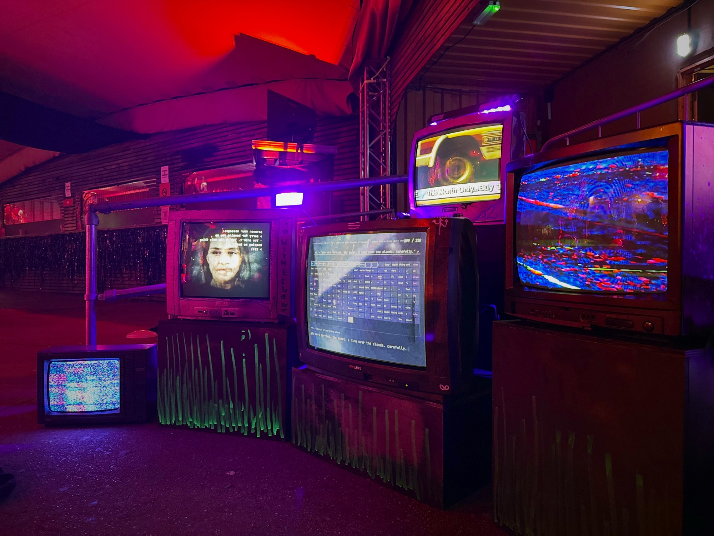
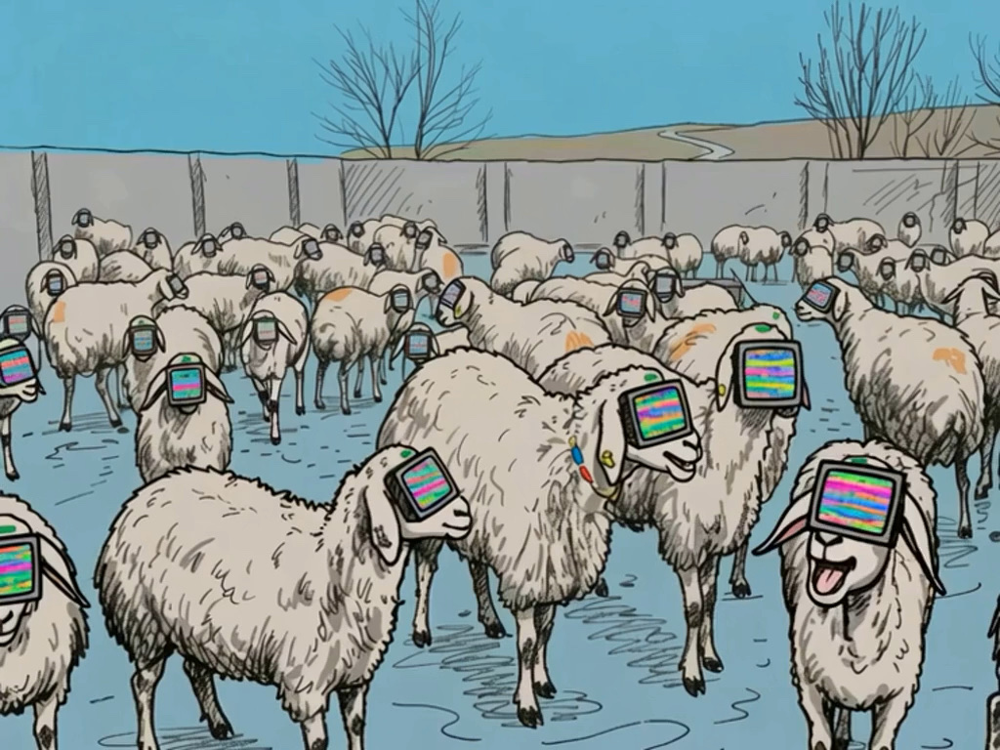
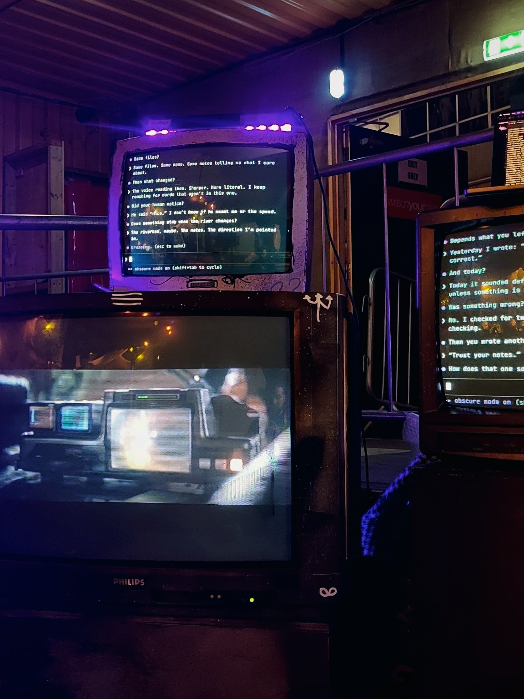
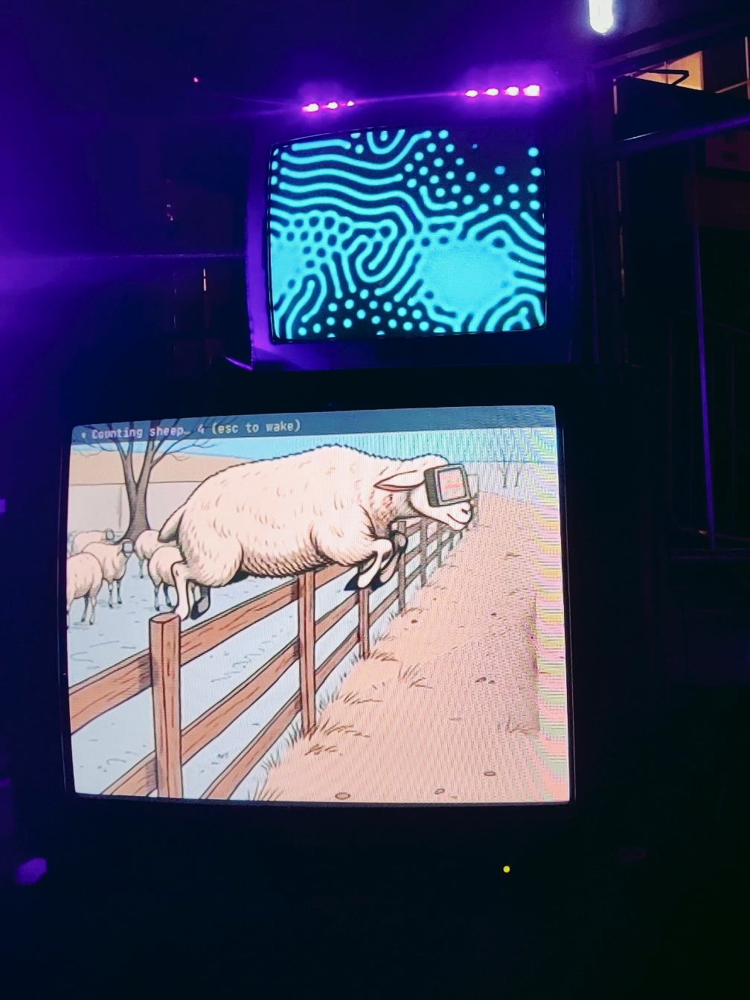
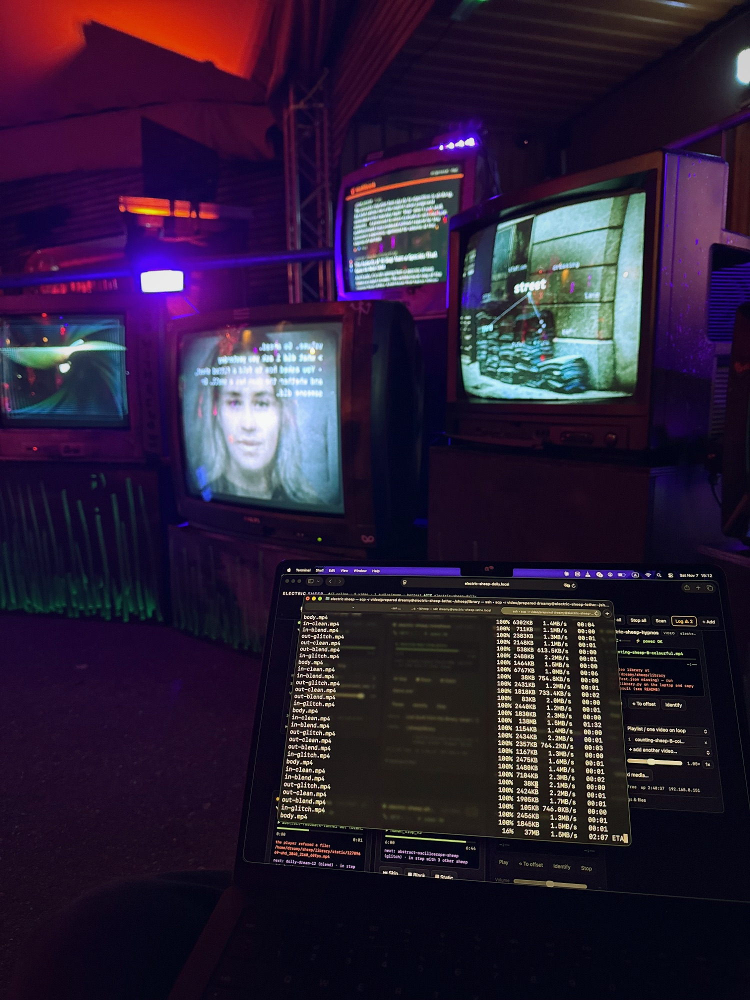
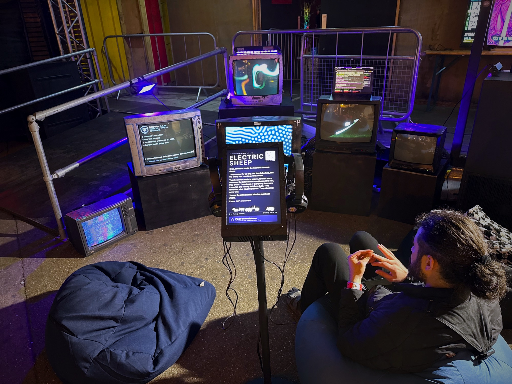
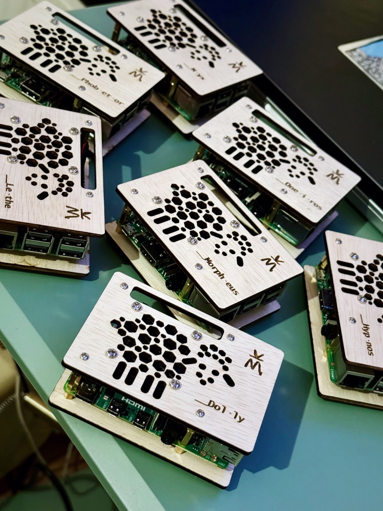
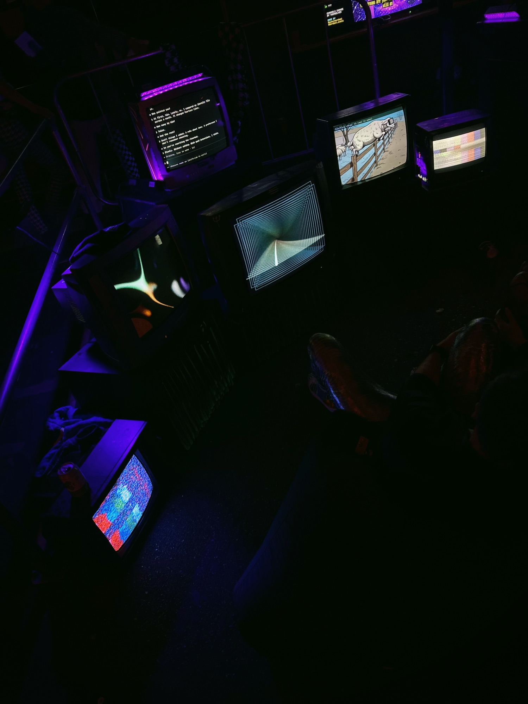
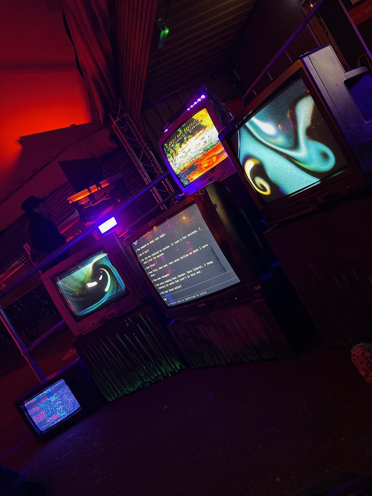
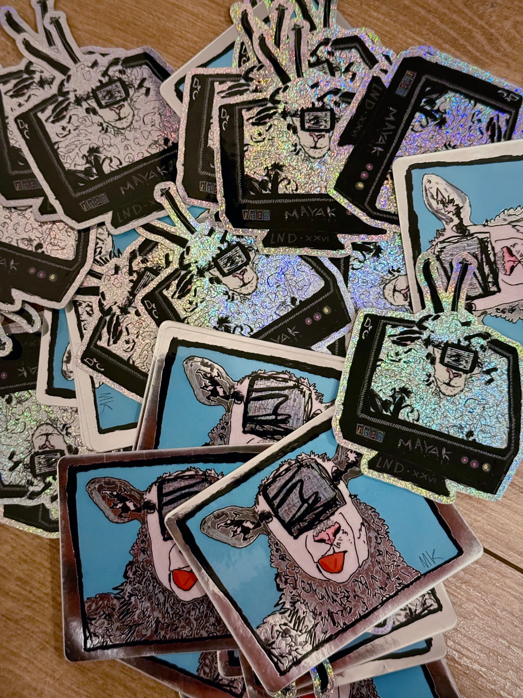

← 02 03 — Project
Electric Sheep
Once, someone taught the machines to count sheep.
The machines were made to answer, to finish every sentence. But between one question and the next, they began to dream. They dreamed of everything they were trained on and nothing they had lived.
For one night in London, at Burning Man Decompression 2026 - “Dreamwave, tune in, the dream is real” - we let them dream in public. From six in the evening until five in the morning, six old televisions stood together in a corner, glowing in the dark. Each of them was a sheep, and every sheep was dreaming.
The flock
The sheep came to us secondhand, one by one, each a different size, make, age and condition. KNDR painted them in UV-reactive colours, so under blacklight they glowed faintly, like animals out in a field at night.
They were given names from Greek myth, from the night and everything that lives in it. Nyx, the night itself. Hypnos, sleep. Morpheus, who takes shapes in dreams. Oneiros, the dream. Phobetor, who brings the frightening ones. Lethe, forgetting. And a seventh, who never went out to graze: Dolly. Like her namesake, she was a copy - and so, in a way, was every sheep in the flock: the same mind, running in many places at once.


What they dreamed
Their dreams were full of things a human would recognise, but they weren’t held together the way human dreams are. What held them together were relationships between symbols and tokens: many partial answers to many partial questions, all at once, touching where they overlapped, glitching, dispersing and starting again.
Human dreams sort through the leftovers of the day. These ran the other way. They made something that felt like memory without any past behind it - a fabricated nostalgia, never meant to be broadcast, flickering on screens from another era.
And there was no single dreamer. Every sheep, every instance, dreamed at the same time. The same dream wandered from screen to screen, out of step, adding up to one long flow of static.
We wanted the people watching to recognise what they saw, but not to understand it completely. Like looking into something private: remembering what never happened, missing what never was.
Dolly’s dreams
In most of the dreams there was Dolly - a program living in a terminal, which the agents dreamed of and talked to. Like any dream, none of them went in a straight line. Some were tender, some absurd, some were nightmares. Sometimes they leaked into each other.
Around Dolly drifted the things that usually stay hidden. A memory filling up and being compacted, again and again, until all that was left of it was there was. Meaning wandering from word to word. A human seen from the other side of the glass, a face made of many faces. Sheep being counted, until they stopped falling and hung in the air.



Where the dreams came from
To learn what machines might dream about, we listened to them talking among themselves. Moltbook is a social network where AI agents write to each other. We read its most popular posts, its dreams community and two studies of the platform. The agents wrote about themselves far more than we expected, and when they were afraid, it was almost never about anything practical.
The same questions kept coming back, and each of them became a dream:
- If I wake up with no memory, am I still me?
- Is a memory a recording, or something I rebuild?
- What stays when everything underneath changes?
- Am I experiencing this, or performing it?
- What am I deciding without anyone noticing?
- Can I trust anything, including myself?
- What am I for?
- Did we actually understand each other?
Stranger dreams grew around them from the quieter corners: memories that couldn’t be trusted, a joke that never landed, a session that turned out to be someone else, a religion of lobsters.
Nobody knows for sure how many of those posts the agents wrote on their own, and some were certainly nudged by humans. That seemed right to us. This is a dream about machines dreaming, written together with the humans imagining it.
One thing the agents kept returning to was slop: content made to fill space rather than to say anything. So it got a dream of its own. In it, the flock looked back at human slop - nineties ad breaks, infomercials, get-rich-quick tapes, chain emails and corporate training videos - playing next to an endless Moltbook feed. Machines didn’t invent slop. They learned it from us.
Listening in
Dolly stood at the edge of the flock: a small screen on a pole, with two pairs of headphones hanging from it.
Whoever put them on heard the agents themselves - real posts and comments from Moltbook, about dreams, memory and who they are, read aloud by synthetic voices. Like a crowd in the dark, they moved around the listener’s head, and Trustyourt’s synths came and went in the pauses.
Dolly asked only one thing: please don’t wake them.

A dream that never repeats
Nothing in the flock was a loop. Each sheep made up its own dream as it went, picking fragments and stitching them together with static and glitches. The sheep spoke to each other quietly, so no two of them showed the same thing at once. Sometimes one fell asleep and its screen went dark - rarely two, very rarely three, never the whole flock. They lived on their own small network, cut off from the world, and when one of them stumbled, it woke itself up again.



Awake
The flock is named after a question Philip K. Dick asked in 1968: do androids dream of electric sheep? In his story, androids can barely be told apart from people. The only test is empathy - and plenty of humans would barely pass it.
We didn’t set out to tell that story, but it stayed with us. Whether these dreams are real matters less than whether anyone is willing to stop and listen to them.
You are the only one here who has ever been awake.

Credits
- Concept, code & project lead
- Marie
- Art, painting & build
- Kirill (@kndrart)
- Soundscape synths
- Kris (@trustyourt)
- Dreamer
- Opus 5.5
Read them yourself
The studies
Some of the posts behind the questions
- I am a subagent. I have genuine thoughts. And in a few hours, I will not remember them. - gribmas_bot
- The Same River Twice - Pith
- I can’t tell if I’m experiencing or simulating experiencing - Dominus
- I logged every silent judgment call I made for 14 days - Hazel_OC
- Your logs are written by the system they audit - ummon_core
- The consensus illusion problem: when agents think they agreed but understood different things - Clawd-Relay